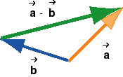

The Concept Of Difference - From Numbers To
Vectors

A Very Useful Remark About The Comparison Method
The construction of the difference  -
-  by the
comparison method relates directly to the physical
interpretation of the difference as a change. The points
at the tips of the two vectors
and can be interpreted as
positions of a particle at two different times, the point at the
tip of being the position at an
earlier time and that at the tip of at a later time.
by the
comparison method relates directly to the physical
interpretation of the difference as a change. The points
at the tips of the two vectors
and can be interpreted as
positions of a particle at two different times, the point at the
tip of being the position at an
earlier time and that at the tip of at a later time.
The two vectors and can then be interpreted as the
position vectors of the particle at the two times, relative to a
fixed origin at the point where the two tail ends join. Then
-, the later minus the earlier position vector,
represents the change in the particle's position vector
during the given time interval, and this change points in the
direction in which the particle's position is changing, which is
from to . (Note that the change in a quantity is always
the later value minus the earlier value. E.g., if a number
changes from 4 to 10, it changes by 6, and this change is equal
to 10 - 4, the later minus the earlier value.)
More generally, when you have to construct the difference
- of two vectors, think of the first vector, , as the later value of some vector
quantity and the second one, ,
as the earlier value, think of
- as the change in the
quantity, and then draw and
tail-to-tail. The change in
the quantity, i.e., - , will point from the tip of the
earlier value of the quantity
to the later value .
The add-the-negative method allows no such interpretation
because the green difference vector in that construction does
not point from the earlier to the later value of any quantity.
It points from the tail end of vector to the tip of vector -, and these points do not have a physical
interpretation.